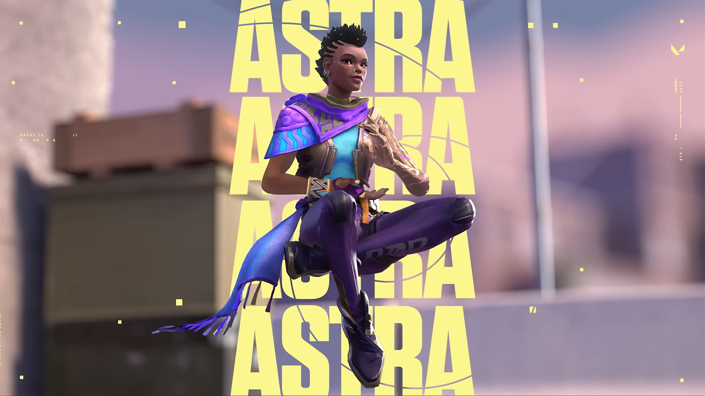
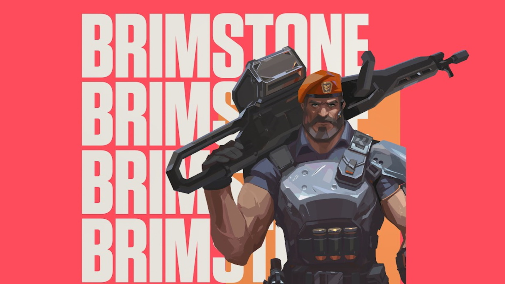
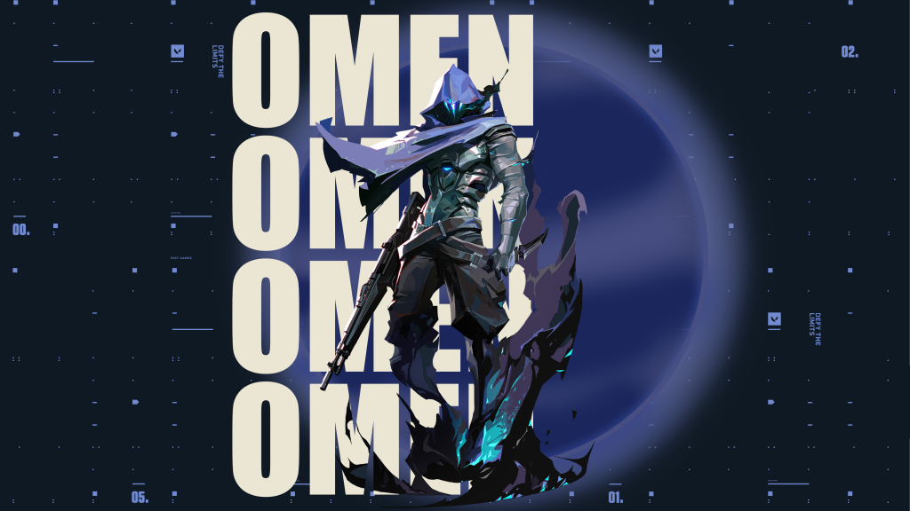
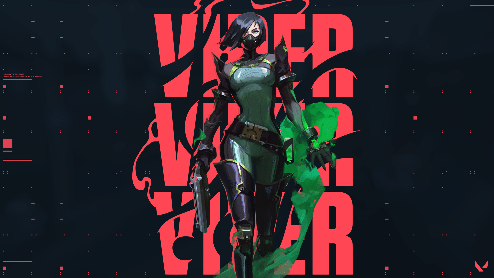

Controllers - Secondary Entry Fragger and Lurker
Controllers are experts at controlling the battlefield by the use of smoke screens. Their abilities disrupt their opponents' sightlines whilst providing cover for teammates as they take control of an area. There are currently four controllers in VALORANT: Astra; Brimstone; Omen; and Viper.
Lets see them one by one :
- Astra
Ghanaian Agent Astra harnesses the energies of the cosmos to reshape battlefields to her whim. With full command of her astral form and a talent for deep strategic foresight, she's always eons ahead of her enemy's next move.

Astra's abilities are :
- X-NOVA PULSE
Place Stars in Astral Form (X) ACTIVATE a Star to detonate a Nova Pulse. The Nova Pulse charges briefly then strikes, concussing all players in its area.
- E - NEBULA
Place Stars in Astral Form (X) ACTIVATE a Star to transform it into a Nebula (smoke). Use (F) on a Star to Dissipate it, returning the star to be placed in a new location after a delay. Dissipate briefly forms a fake Nebula at the Star's location before returning.
- C - GRAVITY WELL
Place Stars in Astral Form (X) ACTIVATE a Star to form a Gravity Well. Players in the area are pulled toward the center before it explodes, making all players still trapped inside fragile.
- X - ASTRAL FORM / COSMIC DIVIDE
ACTIVATE (X) to enter Astral Form where you can place Stars with PRIMARY FIRE. Stars can be reactivated later, transforming them into a Nova Pulse, Nebula, or Gravity Well. When Cosmic Divide is charged, use SECONDARY FIRE in Astral Form to begin aiming it, then PRIMARY FIRE to select two locations. An infinite Cosmic Divide connects the two points you select. Cosmic Divide blocks bullets and heavily dampens audio.
- Brimstone
Joining from the USA, Brimstone's orbital arsenal ensures his squad always has the advantage. His ability to deliver utility precisely and from a distance make him an unmatched boots-on-the-ground commander.

Brimstone's abilities are :
- Q - INCENDIARY
EQUIP an incendiary grenade launcher. FIRE to launch a grenade that detonates as it comes to a rest on the floor, creating a lingering fire zone that damages players within the zone.
- E - SKY SMOKE
EQUIP a tactical map. FIRE to set locations where Brimstone's smoke clouds will land. ALTERNATE FIRE to confirm, launching long-lasting smoke clouds that block vision in the selected area.
- C - STIM BEACON
EQUIP a stim beacon. FIRE to toss the stim beacon in front of Brimstone. Upon landing, the stim beacon will create a field that grants players RapidFire.
- X - ORBITAL STRIKE
EQUIP a tactical map. FIRE to launch a lingering orbital strike laser at the selected location, dealing high damage-over-time to players caught in the selected area.
- Omen
A phantom of a memory, Omen hunts in the shadows. He renders enemies blind, teleports across the field, then lets paranoia take hold as his foe scrambles to learn where he might strike next.

Omen's abilities are :
- Q - PARANOIA
INSTANTLY fire a shadow projectile forward, briefly reducing the vision range of all players it touches. This projectile can pass straight through walls.
- E - DARK COVER
EQUIP a shadow orb and see its range indicator. FIRE to throw the shadow orb to the marked location, creating a long-lasting shadow sphere that blocks vision. HOLD ALTERNATE FIRE while targeting to move the marker further away. HOLD the ability key with targeting to move the marker closer.
- C - SHROUDED STEP
EQUIP a shadow walk ability and see its range indicator. FIRE to begin a brief channel, then teleport to the marked location.
- X - FROM THE SHADOWS
EQUIP a tactical map. FIRE to begin teleporting to the selected location. While teleporting, Omen will appear as a Shade that can be destroyed by an enemy to cancel his teleport.
- Viper
The American chemist, Viper deploys an array of poisonous chemical devices to control the battlefield and cripple the enemy's vision. If the toxins don't kill her prey, her mind games surely will.

Viper's abilities are :
- Q - POISON CLOUD
EQUIP a gas emitter. FIRE to throw the emitter that perpetually remains throughout the round. RE-USE the ability to create a toxic gas cloud at the cost of fuel. This ability can be RE-USED more than once and can be picked up to be REDEPLOYED.
- E - TOXIC SCREEN
EQUIP a gas emitter launcher. FIRE to deploy a long line of gas emitters. RE-USE the ability to create a tall wall of toxic gas at the cost of fuel. This ability can be RE-USED more than once.
- C - SNAKE BITE
EQUIP a chemical launcher. FIRE to launch a canister that shatters upon hitting the floor, creating a lingering chemical zone that damages and slows enemies.
- X - VIPER'S PIT
EQUIP a chemical sprayer. FIRE to spray a chemical cloud in all directions around Viper, creating a large cloud that reduces the vision range and maximum health of players inside of it.